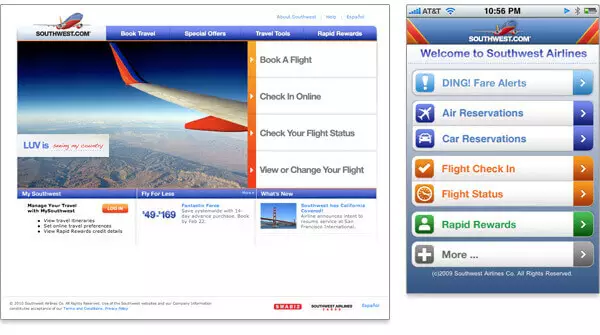

- INTRODUÇÃO
- CONCEITOS
- IMPORTÂNCIA DO MOBILE FIRST
- VANTAGENS DO MOBILE FIRST
- Melhor ranqueamento no Google;
- Melhor experiência do usuário;
- Aumento da credibilidade da marca;
- Otimização do carregamento das páginas;
- Redução de gastos.
- CONCLUSÃO
- REFERÊNCIAS
- VIEIRA, Leandro. O conceito e aplicabilidade do Mobile First. 2016. Disponível em: https://blog.apiki.com/mobile-first-o-conceito-e-sua-aplicabilidade/. Acesso em: 24 ago. 2020.
- MUNHOZ, Júlia Vidigal. Entenda o que é mobile first e conheça as suas principais vantagens. Disponível em: https://www.moblee.com.br/blog/mobile-first-principais-vantagens/. Acesso em: 24 ago. 2020.
- AMPUDIA, Ricardo. Brasil lidera número de smartphones conectados na América Latina. 2017. Disponível em: https://www1.folha.uol.com.br/mercado/2017/09/1917782-brasil-lidera-numero-de-smartphones-conectados-na-america-latina.shtml. Acesso em: 24 ago. 2020.
- ANTUNES, Ana. MOBILE FIRST: CONCEITO E RAZÕES PARA PENSAR POR ESSA PERSPECTIVA. 2019. Disponível em: https://gobacklog.com/blog/mobile-first/. Acesso em: 24 ago. 2020.
Este presente trabalho apresenta o estudo sobre o conceito de Mobile First, suas aplicações, como também as vantagens e as desvantagens de usar tal técnica de desenvolvimento. Seguir tal metodologia permite uma melhor adaptação da página web, já que o desenvolvimento será iniciado nos dispositivos móveis, que são menores, e aí será passado aos dispositivos maiores e que geralmente não são portáteis. O conceito de Mobile First foi elaborado por Luke Wroblewski em 2009 e 2010 no seu blog e no ano seguinte ele publicou através da A Book Apart o livro Mobile First que é uma leitura obrigatória para aqueles que queiram compreender a fundo a técnica e suas aplicabilidades.
Sabendo-se que em projetos web, o foco principal precisa ser na usabilidade, ou seja, na maneira com que o usuário irá interagir com a página. Para que os desenvolvedores cumpram sua missão, o caminho do Mobile First é seguido. Assim, é feito o melhor uso de pequenos espaços na tela, fazendo com que o site não fique poluído com informações desnecessárias e que poderiam atrapalhar o visitante. Infelizmente, esse conceito, na maioria das vezes, não é aplicado. A maioria das empresas hoje ainda desenvolvem seus sites nos desktops primeiro, e então se adaptam para atender a demanda dos usuários mobile.

Ao analisarmos as imagens acima, podemos perceber que, se aplicado o conceito de Mobile First, a página web do desktop acaba ficando bem mais organizada, já que os desenvolvedores souberam aproveitar bem os espaços no mobile, e depois apenas os transformaram para o desktop.
Além do caso de que os recursos da tela são melhor aproveitados, o Mobile First se mostra importante por outros aspectos também. Segundo relatório da GSMA (GSM Association), o Brasil é o país com mais smartphones conectados da América Latina. Até o fim de 2017, foram contabilizadas mais de 234 milhões de conexões, e a tendência é que esse número seja cada vez maior. Além disso, o tráfego de dados via mobile aumenta, em média, 50% a cada ano. Levando em conta os fatos apresentados, a tendência é que a maneira mais fácil e eficiente de chegar até um determinado público seja por meio dos dispositivos móveis. Ou seja, pensar no mobile como prioridade é uma necessidade urgente do mercado.
Esse novo conceito de desenvolvimento é capaz de proporcionar inúmeros benefícios para a empresa que está construindo o site. Pode-se citar:
Se uma empresa ou organização está pensando em começar uma solução digital do zero ou refazer uma já existente, vale a pena ficar de olho em assuntos como Mobile First. Certamente, os usuários vão agradecer utilizando mais a sua solução e até mesmo recomendando aos conhecidos pela boa experiência que teve. Pensar em Mobile First não é mais uma decisão de design, mas sim de negócios.